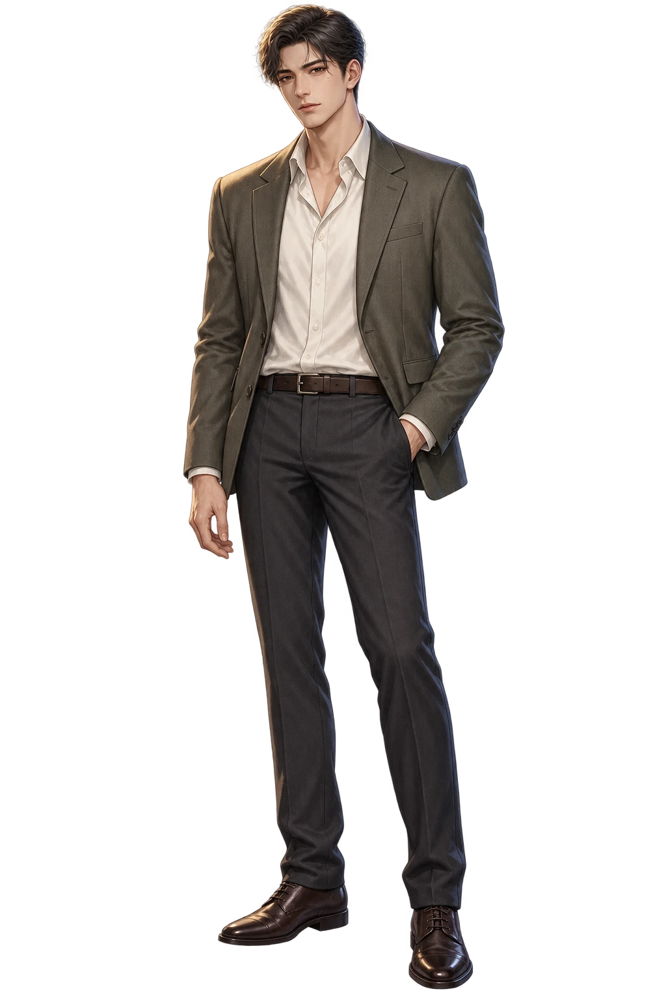
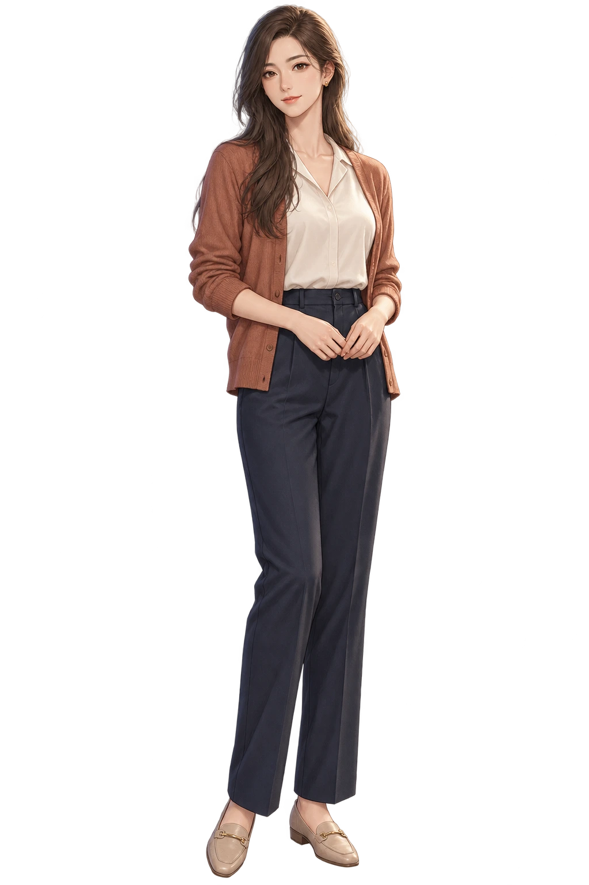
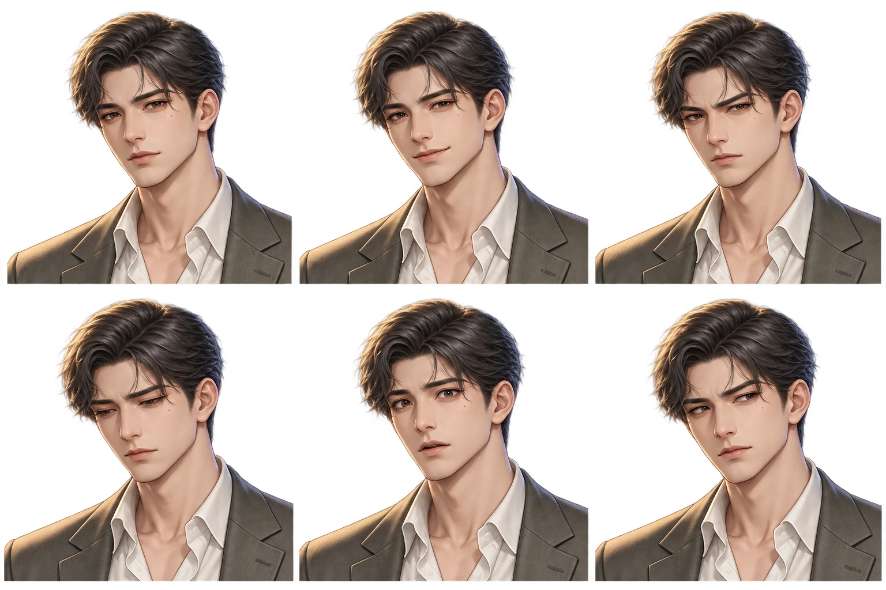
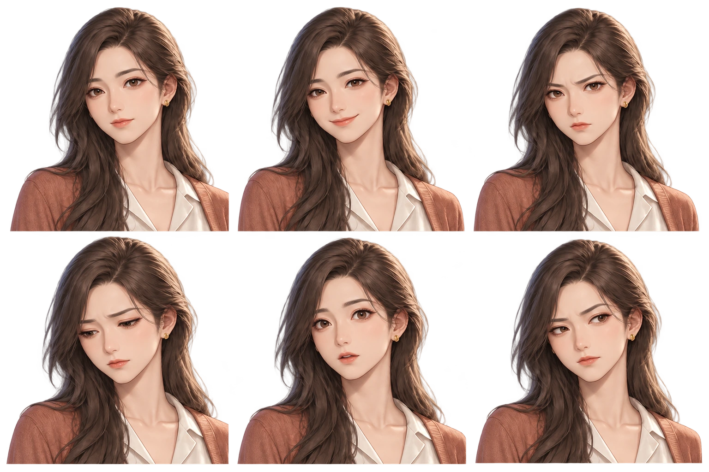
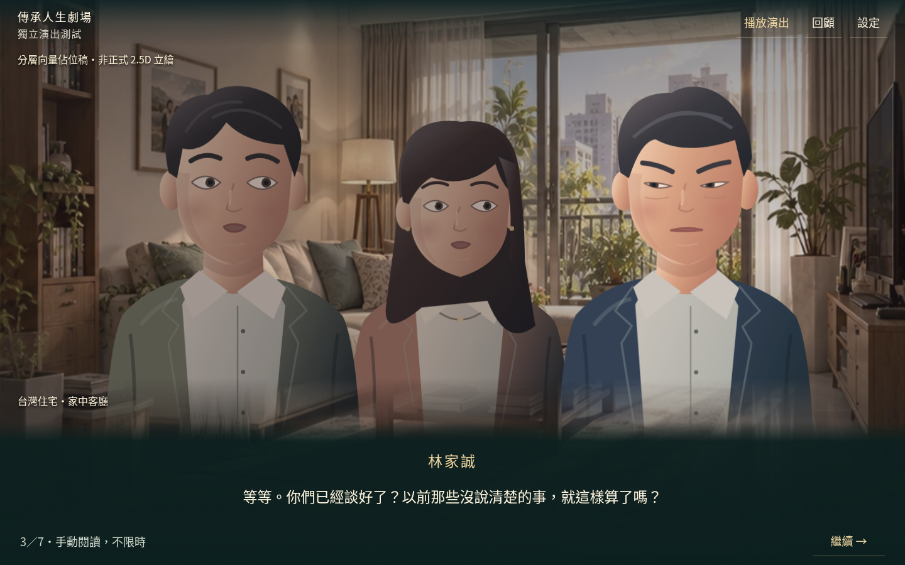
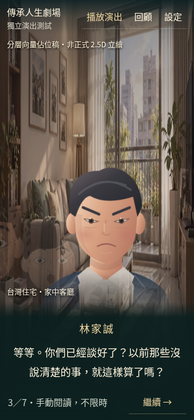

先確認人物，再決定怎麼演。
本輪分成兩份獨立成果：男女高品質美術候選稿，以及原場景的有限動畫自然度改善。都還沒有整合第一卷。
候選稿為 AI 輔助製作，尚未完成美術簽核與分層拆件。下方男女13.5秒預覽是表情／姿勢分鏡。新增林家安樣機另以局部圖層驗證眨眼與嘴型，尚非全身骨架或語音對嘴。
下一步：林家安局部圖層樣機
同一張高解析半身基準，合成眼皮、目光與三種嘴型。13.5秒有限演出，錄影約14秒含結尾；沒有配音。
局部圖層試作已能運作；正式美術簽核、全身骨架與連續姿勢銜接仍未完成。未接入完整第一卷。
一男一女・全身立繪候選稿




比較六種表情
每張圖：上排依序為平靜、開心、憤怒；下排為悲傷、震驚、懷疑。它們是候選稿，不是已對齊的正式變形圖層。

家安表情原圖
雅婷表情原圖

同一場戲・約43秒前後比較
這組比較仍使用向量佔位人物，只比較表演節奏，不能代表正式美術品質。兩支均為原速瀏覽器錄製；新版最後選擇畫面保留至約43.27秒，不加速台詞。
手機與桌面實際畫面


第一卷六次選擇、八種敘事結局、法律效果、正式經營模式與State v4均未變動。需你確認美術與演出方向後，才評估正式素材製作或整合。